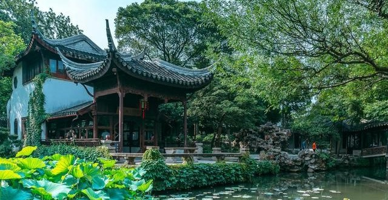

香洲画舫
香洲为“舫”式结构，有两层舱楼，通体高雅而洒脱，其身姿倒映水中，更显得纤丽而雅洁。香洲寄托了文人的理想与情操。
香洲，用的是屈原笔下“芳洲”的典故，《楚辞》中有“采芳洲兮杜若，将以遗兮下女”的句子。古时常以香草来比喻清高之士，此处以荷花景观来喻意香草，也很得体。在中国古典园林众多的石舫中，拙政园香洲大概称得上是造型最为美观的一个。船头是台，前舱是亭，中舱为榭，船尾是阁，阁上起楼，线条柔和起伏，比例大小得当，使人想起古时苏州、杭州、、扬州一带山温水软、画舫如云的景象。香洲位于水边，正当东、西水流和南北向河道的交汇处，三面环水，一面依岸，由三块石条所组成的跳板登“船”，站在船头，波起涟漪，四周开敞明亮，满园秀色，令人心爽。烈日酷暑，此地却荷风阵阵，举目清凉。香洲船头上悬有文徵明写的题额，后人还专门为之题跋。香洲这条旱船，建筑手法典雅精巧，引人入胜，使人感到一种对高洁人格的追寻。